Qu'est-ce que c'est ?
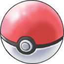
Les Pokémon sont des créatures dotées de pouvoirs extraordinaires. Certains peuvent cracher des flammes, d'autre peuvent utliser la télépatie ou encore lever un blizzard. Les pokémon se font capturer par des humain pour de multiple raisons. Ces derniers recherchent la gloire en fesant des combats pokémon ou en participant à des concours, par exemple. Dans tout les cas, pokémons et humains vivent ensemble et apprennent à devenir amis.
Les différents types.
Il existe 17 types de pokémon. Ces types révèlent leurs forces et leurs faiblesses. Le tableau suivant reprend les types de la sixième génération
| Type | Exemple de pokémons | Faiblesse à | Résistant à | Immunisé à | Trés efficace sur | Peu efficace sur | Inefficace sur |
|---|---|---|---|---|---|---|---|
| Normal | 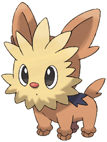 | Combat | Aucun | Spectre | Aucun | Acier Roche | Spectre |
| Feu |  |
Eau Sol Roche | Feu Insecte Glace Acier Plante Fée | Aucun | Plante Insecte Glace Acier | Feu Eau Roche Dragon | Aucun |
| Eau | 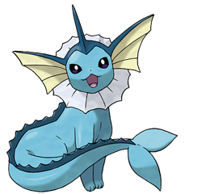 | Electik Plante | Feu Glace Acier Eau | Aucun | Feu Roche Sol | Eau Plante Dragon | Aucun |
| Plante | 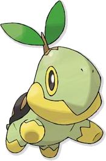 | Glace Feu Vol Poison Insecte | Electrik Eau Sol Plante | Aucun | Eau Roche Sol | Feu Plante Acier Dragon Vol Insecte Poison | Aucun |
| Eléctrik |  |
Sol | Vol Acier Electrik | Aucun | Eau Vol | Plante Electik Dragon | Aucun |
| Glace |  |
Feu Roche Acier Combat | Glace | Aucun | Sol Vol Plante Dragon | Acier Feu Eau Glace | Aucun |
| Combat | 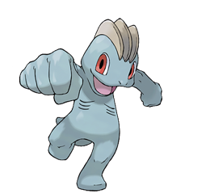 | Vol Psy Fée | Ténèbre Insecte Roche | Aucun | Normal Acier Roche Ténèbre Glace | Insecte Vol Poison Psy Fée | Spectre |
| Poison | 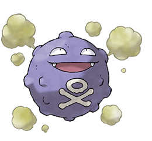 | Sol Psy | Plante Insecte Poison Combat Fée | Aucun | Plante Fée | Poison Roche Sol Spectre | Acier |
| Sol | 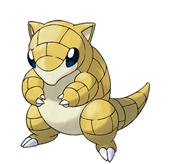 | Glace Eau Plante | Poison Roche | Electrik | Electrik Acier Poison Roche Feu Roche | Insecte Plante | Vol |
| Vol | 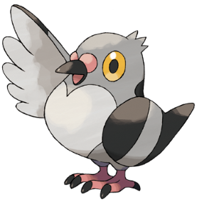 | Glace Electrik Roche | Combat Insecte Plante | Sol | Plante Combat Insecte | Electrik Acier Roche | Aucun |
| Psy | 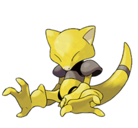 | Insecte | Combat | Psy | Spectre | Combat Poison | Psy |
| Insecte | 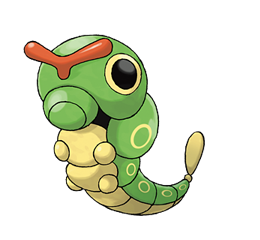 | Feu Roche Vol | Combat Plante Sol | Aucun | Plante Ténèbre Psy | Combat Feu Spectre Vol Poison Fée Acier | Aucun |
| Roche | 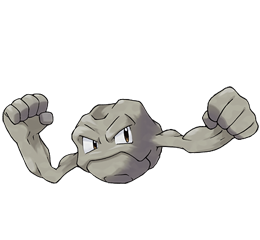 | Eau Plante Sol Combat Acier | Feu Normal Poison Vol | Aucun | Feu Vol Glace Insecte | Sol Acier Combat | Aucun |
| Spectre | 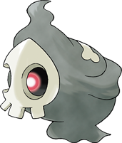 | Ténèbre Spectre | Insecte Poison | Combat Normal | Spectre Psy | Ténèbre | Normal |
| Dragon | 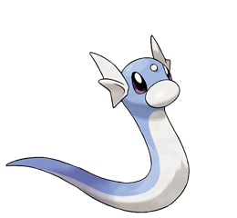 | Glace Dragon Fée | Plante Eau Feu Electrik | Aucun | Dragon | Acier | Fée |
| Fée | 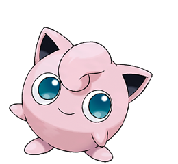 | Poison Acier | Combat Ténèbre Insecte | Dragon | Dragon Combat Ténèbre | Feu Poison Acier | Aucun |
| Ténèbre | 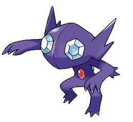 | Combat Isecte Fée | Spectre Ténèbre | Psy | Psy Spectre | Combat Ténèbre Fée | Aucun |
Les jeux vidéo
Le principe dans le jeu vidéo est trés simple. Le joueur est un petit personnage qui a pour missions de parcour une région entière afin de collecter des informations sur les pokémons.
Le pokédex
Cette merveilleuse machine est une invention du professeur Chen. Cette appareil analyse les pokémons lorsqu'ils sont capturés par un dresseur. Ces informations interessent tout les scientifiques pokémon qui leur permettent d'avancer dans leur recherches sur les pokémons, de nombreux mystères sur les pokémons ne sont pas encore éclaircis.